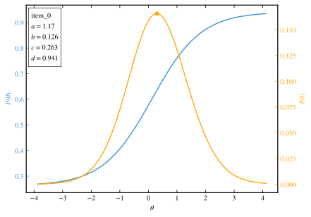
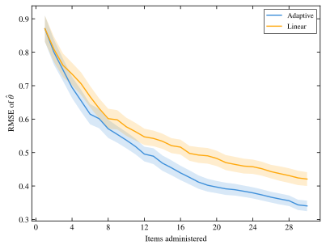

Introduction#
catsim is a Python package for computerized adaptive testing (CAT). It computes the
steps of an adaptive test, from the choice of each item to the decision to stop, and simulates
tests on examinees whose abilities are known, to compare testing methods. An application that
gives adaptive tests can use those computations as its core. This page introduces CAT and the item
response theory behind it, and ends with a map of catsim’s parts. Terms and Notation lists
the terms and symbols these pages use.
What a Test Measures#
A test measures an examinee’s ability: a characteristic that cannot be observed directly, such as knowledge of a subject or a personality trait. Educational and psychological tests are common examples. What can be observed are the examinee’s answers to the test’s items, and the ability is inferred from them as a number on a continuous scale.
The Problem with Linear Tests#
Traditional linear tests use a paper-and-pencil approach where all examinees answer the same items in the same order. This creates several problems:
High-ability examinees waste time on easy questions
Low-ability examinees become frustrated with overly difficult questions
Test length cannot be optimized for individual examinees
A computerized adaptive test avoids them by choosing each examinee’s items during the test. It rests on item response theory, the subject of the next section.
Item Response Theory Models#
catsim uses item response theory [Lord and Novick, 1968, Rasch, 1966], a family of models developed
in the second half of the 20th century to measure abilities and to compare examinees on a common
ability scale, which also justifies its use in adaptive testing. catsim implements its
one-, two-, three- and four-parameter logistic models, in which examinees and items are represented
by numbers, the models’ parameters.
The logistic models are unidimensional: a test measures a single ability. The test is made of items, the questions an examinee answers, each scored correct or incorrect.
An examinee’s ability is written \(\theta\). It can take any real value, and its scale is set by
whoever calibrates the test. It is common to set it so that the abilities of the population follow
the standard normal distribution \(N(0, 1)\), under which about 99.99% of examinees lie between \(-4\)
and \(4\). The ability cannot be observed, so it is estimated from the responses: the ability
estimate \(\hat{\theta}\), which tends to get closer to the true \(\theta\) as the test gets longer.
By default, catsim’s estimators keep their estimates within \([-6, 6]\), wider than any plausible
examinee or item bank (ADR-0018: Ability Scale and Extreme Response Patterns).
Under the logistic models, item \(i\) has up to four parameters:
its discrimination \(a_i\): how sharply the item separates examinees of lower and higher ability. Examinees whose \(\theta\) is above the item’s difficulty tend to answer a highly discriminating item correctly, and the others incorrectly; as \(a_i\) gets lower, this threshold blurs and the item gives less information. It is common for \(a_i > 0\).
its difficulty \(b_i\): the point of the ability scale at which the item’s characteristic curve is steepest, where it separates examinees best. The item is most informative at or near it (exactly at it when \(c_i = 0\) and \(d_i = 1\)). It is on the same scale as \(\theta\), so difficulties and abilities can be compared directly. A CAT needs items at every difficulty, so that it can give each examinee the items that suit their ability.
its guessing parameter \(c_i\), the lower asymptote of its characteristic curve: the probability that an examinee of very low ability still answers the item correctly. It lies between 0 and the upper asymptote, \(0 \leq c_i < d_i\), and the lower it is, the better the item.
its upper asymptote \(d_i\): the probability that an examinee of very high ability answers the item correctly. \(1 - d_i\), the slipping parameter, is the probability that they still answer it incorrectly. It lies between the guessing parameter and 1, \(c_i < d_i \leq 1\), and the higher it is, the better the item.
When every item has \(d_i = 1\), the four-parameter logistic model reduces to the three-parameter
one. When, in addition, every \(c_i = 0\), it reduces to the two-parameter model, and when every
\(a_i\) is also equal, to the one-parameter model. The one-parameter model with every \(a_i = 1\) is
the Rasch model [Rasch, 1966]. The formulas below hold for all of them, given the item
parameters, so catsim treats the four models alike.
Under IRT, the probability that an examinee of ability \(\theta\) answers item \(i\) correctly is the item’s characteristic curve [De Ayala, 2009, Magis, 2013]
The information the item gives at ability \(\theta\), how much a response to it sharpens an estimate near \(\theta\), is [De Ayala, 2009, Magis, 2013]
where \(Q_i(\theta) = 1 - P_i(\theta)\) is the probability of an incorrect response. The following figure draws both curves for one item: the item is most informative near its difficulty.

Fig. 1 Item characteristic and information curves for an item. The dot represents the point at which the item is most informative.#
The sum of the information of the items administered to an examinee is the test information [De Ayala, 2009]:
The uncertainty of an ability estimate is its standard error \(SE(\hat{\theta})\). For a maximum likelihood estimate it is [De Ayala, 2009]
Every item adds information, so the more items an examinee answers, the smaller the standard
error. catsim computes these quantities with the functions of the catsim.irt
module.
The Item Matrix#
In catsim, the items are a numpy.ndarray with one row per item and one column
per parameter, the item matrix. Its four columns hold \(a\), \(b\), \(c\) and \(d\), in this order. A
matrix with one, two or three columns is read as \([b]\), \([a, b]\) or \([a, b, c]\), and the missing
parameters take the values \(a = 1\), \(c = 0\) and \(d = 1\). An ItemBank holds an
item matrix, and ItemBank.generate draws one at random:
>>> from catsim import ItemBank
>>> ItemBank.generate(5, "1PL")
ItemBank(n_items=5, model=1PL)
>>> ItemBank.generate(5, "2PL")
ItemBank(n_items=5, model=2PL)
>>> ItemBank.generate(5, "3PL")
ItemBank(n_items=5, model=3PL)
>>> ItemBank.generate(5, "4PL")
ItemBank(n_items=5, model=4PL)
>>> ItemBank.generate(5, "3PL", corr=0.5).items.shape
(5, 4)
These examples draw five items under each logistic model. Whatever the model, the item matrix has
four columns. In the last example, the discrimination and the difficulty have a correlation of
\(0.5\), which simulations may need [Chang et al., 2001]. Each item also has a name, so that results
can say which item is which; a calibrated bank and its names can be read from a CSV file
(ItemBank).
Computerized Adaptive Tests#
Computerized adaptive testing emerged in the 1970s as tailored testing [Lord, 1977]. A linear test estimates an examinee’s ability once, at the end. A computerized adaptive test (CAT) updates the estimate after each response. Knowing more about the ability at each step lets the test choose more informative items during the test, so the standard error of the estimate falls faster. The figure compares the two on one simulated population: as items accumulate, the adaptive test’s estimates come closer to the true abilities than the linear test’s.

Fig. 3 The RMSE of 300 simulated examinees’ estimates after each item, from one 200-item bank. The adaptive test chooses each examinee’s items by maximum information; the linear test gives everyone the 30 items most informative at the population’s mean.#
The CAT Lifecycle#
A computerized adaptive test follows a well-defined lifecycle:
flowchart TD
start([Start]) --> init[Initial ability estimate]
init --> select[Item selection and administration]
select --> answer[Response]
answer --> estimate[Ability estimation]
estimate --> stop{Stopping criterion<br>reached?}
stop -- No --> select
stop -- Yes --> finish([End])
The examinee’s initial ability estimate is set;
an item is selected at the current ability estimate and administered;
the ability is estimated again from the responses to all items so far;
if a stopping criterion is met, the test ends; else it goes back to step 2.
The literature proposes many methods for each of these four phases. In catsim, each
phase is a strategy with a module of its own, an initializer, a selector, an estimator and a
stopper, so a test can combine any method for each phase. The sections below introduce each
phase.
Initialization#
The initializer runs once per examinee and sets the initial ability estimate \(\hat\theta_0\). It may
give every examinee the same value (catsim.initialization.FixedPointInitializer), or draw
one from a uniform or a normal distribution (catsim.initialization.UniformInitializer,
catsim.initialization.NormalInitializer). The literature also starts at other points,
such as the ability at which the item bank is most informative.
In catsim, initializers are in the catsim.initialization module.
Item Selection#
At the current estimate \(\hat{\theta}\), the selector chooses an item from the item bank and the
examinee answers it. The best-known method gives the item that is most informative at
\(\hat{\theta}\) (catsim.selection.MaxInfoSelector). It tends to give the same few items
to many examinees and to leave the rest of the bank unused, so other selection methods were
proposed.
How often an item is given is measured by its exposure rate, the share of examinees given it:
where \(q_i\) is the number of examinees given item \(i\) and \(N\) the number of examinees. An item given
to many examinees becomes known to future ones. Exposure-control methods keep the rates below a cap
\(r_{\max}\) or choose among the best items at random
(selection techniques). A simulation reports the rates with
exposure_rates().
In catsim, selectors are in the catsim.selection module.
Ability Estimation#
After each response, the estimator updates the ability estimate \(\hat{\theta}\) from the responses
so far, each correct or incorrect, and the parameters of the items answered. In catsim,
the responses are a sequence with one entry for each administered item, in the order they were
given: True or 1 for a correct response, False or 0 for an incorrect one.
>>> responses = [True, True, False, True, False]
Estimators fall into two groups. Maximum likelihood estimators return the ability at which the
responses are most likely, the maximum of the log-likelihood (catsim.irt.log_likelihood()).
Bayesian estimators combine the likelihood with a prior distribution of the abilities in the
population. Each estimator also gives the standard error of its estimate, by its own formula
(estimation techniques).
In catsim, estimators are in the catsim.estimation module.
Stopping Criterion#
Since a CAT selects its items during the test, a stopping criterion decides when the test ends and
no further items are given. A stopper may end the test at a fixed number of items
(catsim.stopping.MaxLengthStopper), once the standard error of the estimate falls to a
threshold (catsim.stopping.StandardErrorStopper), or once a confidence interval for the
ability estimate falls within one ability band (catsim.stopping.ConfidenceIntervalStopper).
A catsim.stopping.StopRule combines several stoppers, ending the test as soon as any one
holds, after an optional minimum number of items.
In catsim, stoppers are in the catsim.stopping module.
catsim’s Parts#
flowchart LR
bank[(ItemBank)] --> engine[CatEngine]
strategies["Strategies:<br>initializer, selector,<br>estimator, stopper"] --> engine
app([Your application]) -- "start, select, answer:<br>one session, step by step" --> engine
simulate[simulate] -- "one session per<br>examinee" --> engine
simulate -- returns --> result[SimulationResult]
The item bank. An
ItemBankholds the calibrated items, their parameters and their names, and never changes.The engine and the session. A
CatEngineholds an item bank and the strategies of a test. Its three steps follow the lifecycle above:startsets the initial estimate,selectchooses the next item andanswerrecords a response, updates the estimate and asks the stopper whether the test ends.startreturns aSession, the record of one examinee’s test so far, andselectandanswertake one and return the next. catsim keeps nothing between steps: an application that gives tests keeps its sessions and calls the steps as its examinees answer (Embedding catsim).The strategies. One for each phase, and an optional exposure control that may decline the item the selector proposes. The technique pages describe the built-in ones (Techniques), and a method author can write others (Extending catsim).
Simulations and their results.
simulate()runs one session for each simulated examinee, given by a true ability or by recorded responses, and returns aSimulationResult, whose tables and metrics compare the final estimates with the true abilities (Running Simulations). Reproducibility shows how to seed a study so that it repeats.
ADR-0006: Each Step Is Computed From Explicit Inputs, and the Session Is a Value records why each step takes everything it needs as an input.